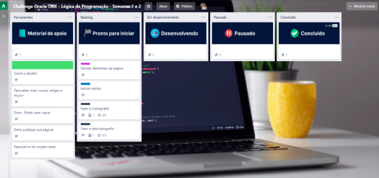

Sobre o Challenge
Durante estas duas semanas, vamos trabalhar em uma aplicação que criptografa textos, assim você poderá trocar mensagens secretas com outras pessoas que saibam o segredo da criptografia utilizada.
A página deve ter campos para inserção do texto a ser criptografado ou descriptografado, e a pessoa usuária deve poder escolher entre as duas opções
Temos um período de tempo de quatro semanas para desenvolver o projeto e vamos trabalhar com o sistema ágil de desenvolvimento, utilizando o Trello que pode ser acessadp clicando aqui: Trello!
Requisitos da Sprint 1
- Aceitar apenas letras minúsculas.
- Não aceitar acentos.
- Não aceitar caracteres especiais.
- Criptografar uma palavra.
- Retornar a palavra ao original.
- O resultado deve ser exibido na tela.
- Botão de copiar palavra.